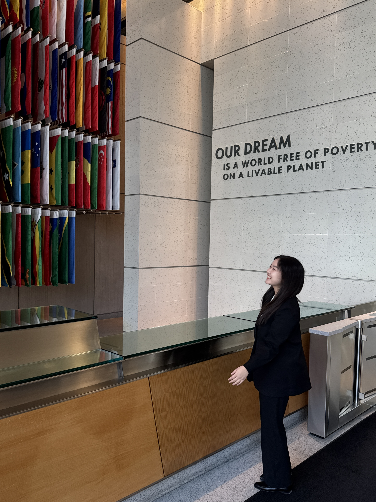
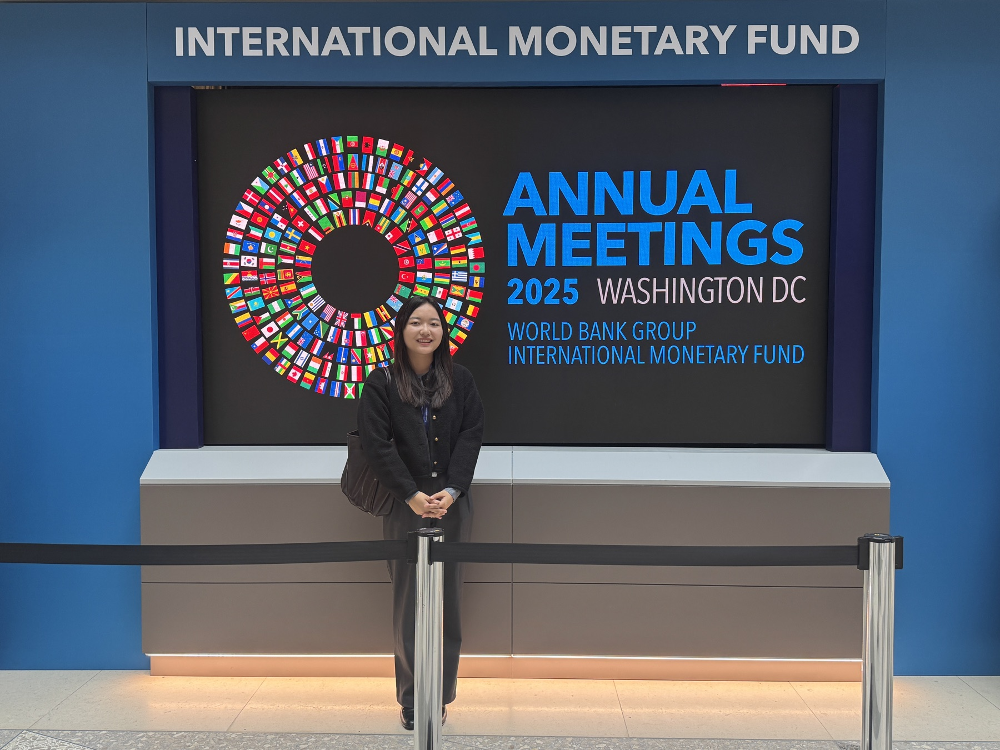
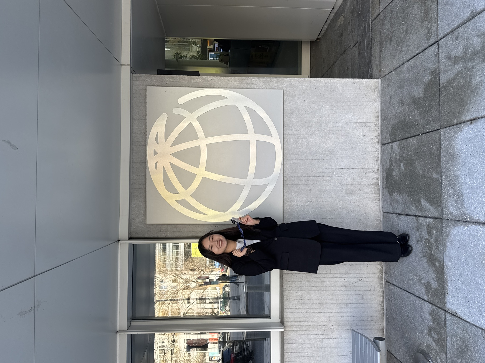
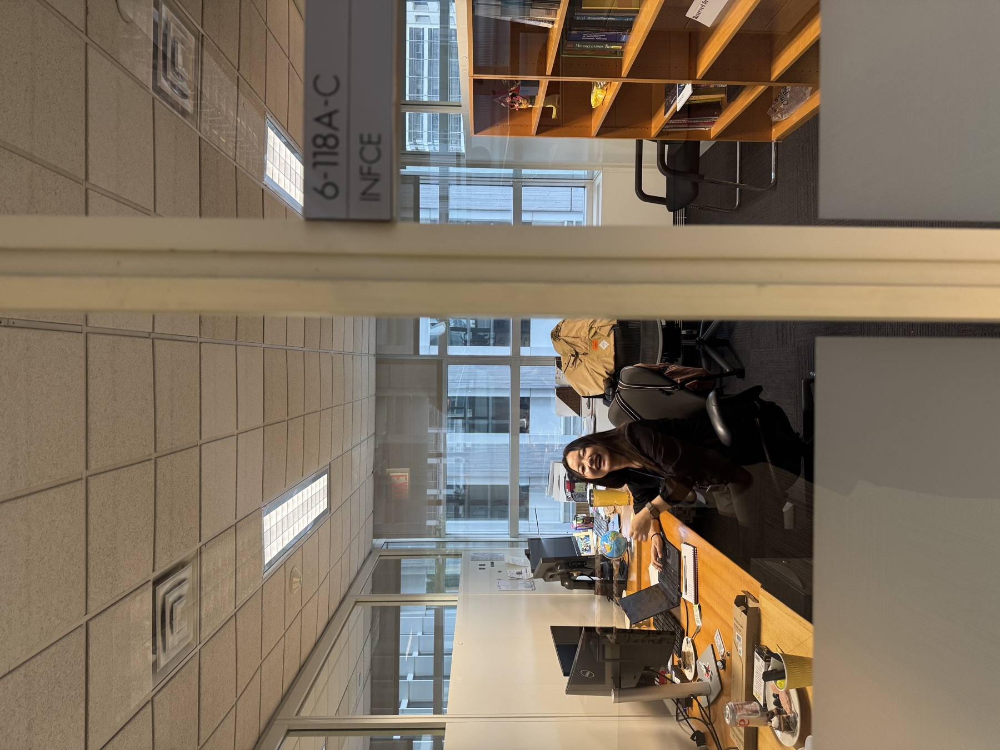
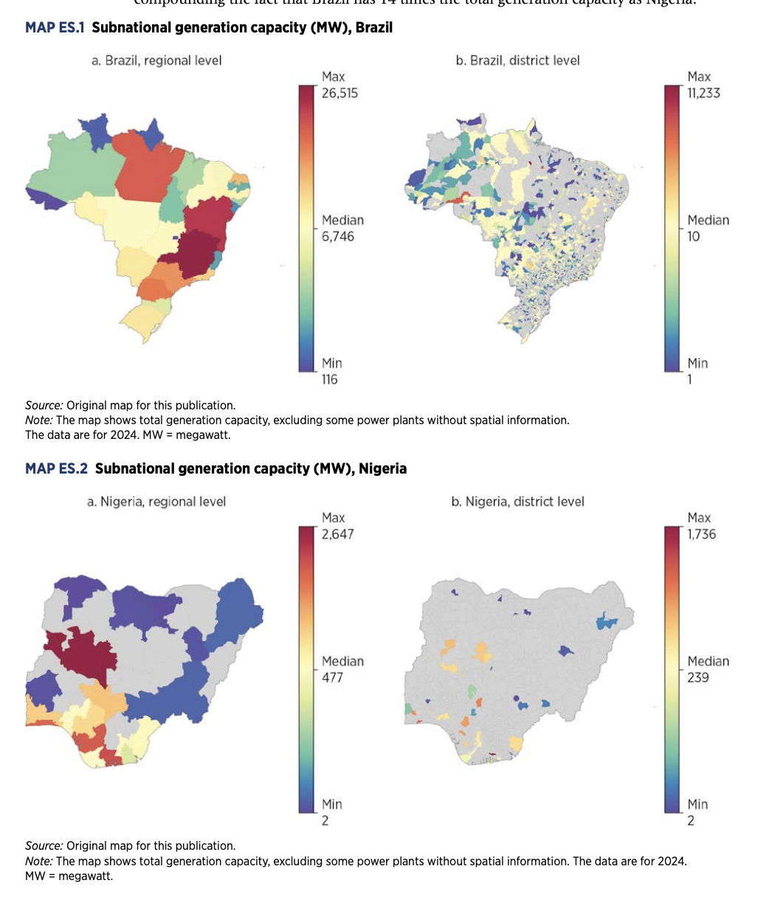
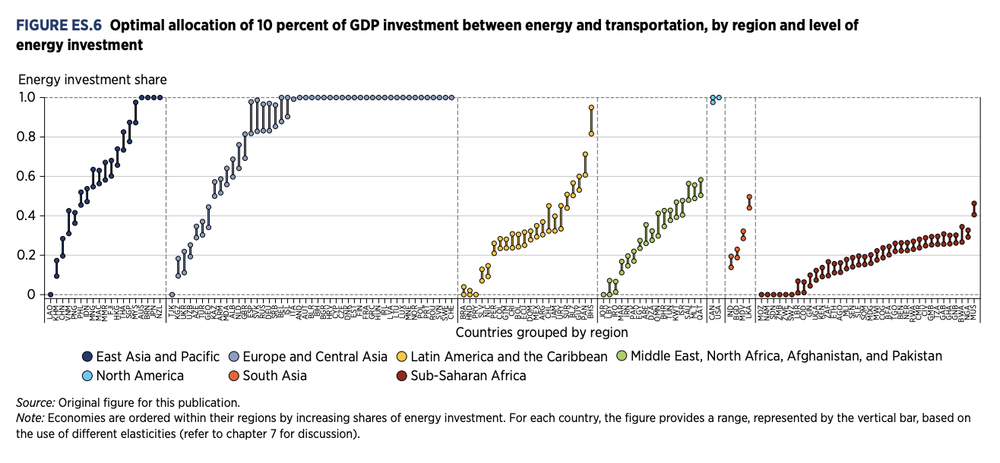
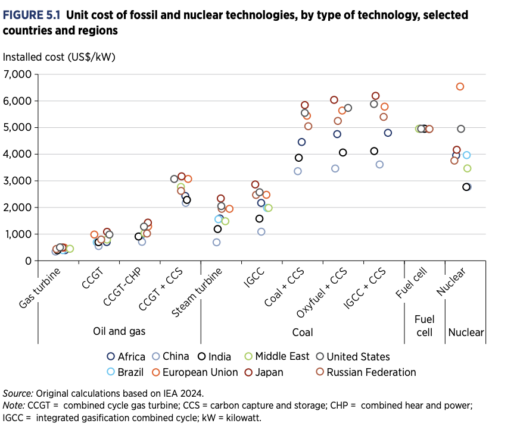
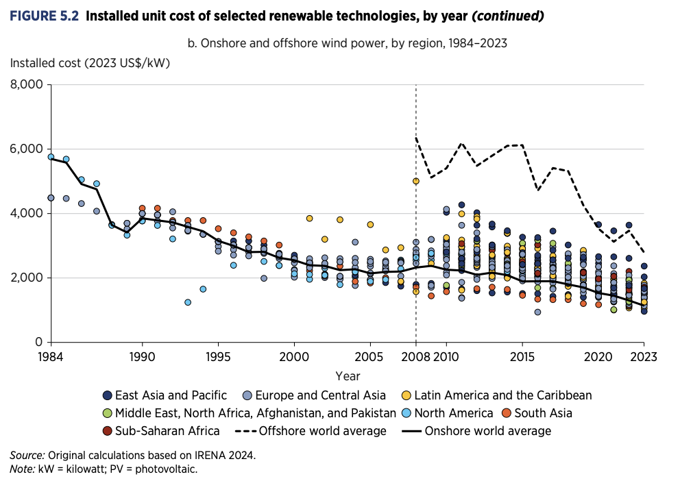
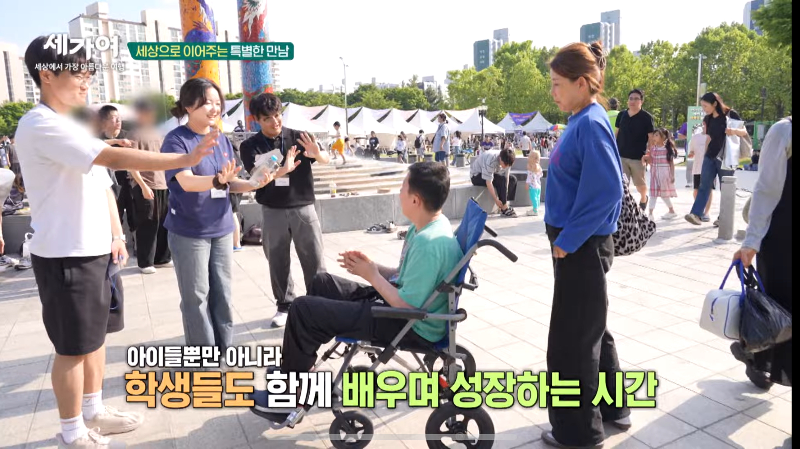

01
Income-Related Disparities in Recovery and Recurrence After Catastrophic Health Expenditure: A Longitudinal Analysis of the Korea Health Panel, 2011–2018
R&R at The Korean Journal of Health Economics and Policy.

Health Economics · Applied Microeconometrics · Health Policy
MPH Candidate, Seoul National University Graduate School of Public Health
I am an MPH candidate at the SNU Health Economics I Lab. My research examines how older adults and their families adjust medical care, insurance, and economic resources after a health shock. I use longitudinal surveys and large-scale administrative data with applied microeconometric and machine-learning methods.
Previously, I worked in the World Bank Office of the Chief Economist for Infrastructure, supporting cross-country research and reproducible data workflows across more than 150 countries.
I am an MPH candidate at the SNU Health Economics I Lab. My research examines how older adults and their families adjust medical care, insurance, and economic resources after a health shock. I use longitudinal surveys and large-scale administrative data with applied microeconometric and machine-learning methods.
Previously, I worked in the World Bank Office of the Chief Economist for Infrastructure, supporting cross-country research and reproducible data workflows across more than 150 countries.
Health Economics, Applied Microeconometrics, Health Policy, Cost-Effectiveness Analysis, Geospatial Analysis, Child Health, and Palliative and Hospice Care.
Health economics
Medical expenditure burden, preventive care, catastrophic health expenditure, recovery, and recurrence.
Applied microeconometrics
Longitudinal analysis of insurance decisions, family health shocks, work conditions, and parental labor supply.
Policy & data science
Machine learning, policy evaluation, linked health records, cost-effectiveness analysis, and automated geospatial pipelines.
Featured in the official SNU News article “SNU Internship Programs Connecting Students to the Field” for my World Bank internship experience.
Selected to present “Financial Burden and Health Investment Decisions” at the APHA 2026 Annual Meeting and Expo in San Antonio.Presentation · Nov 3, 2026
Joined the Social Policy Modeling Lab at the Seoul National University AI Institute as a Summer Research Intern.
Received the 2026 APHA Medical Care Section Student Paper Award.
Received Honorable Mention, placing in the top 7 of 120 teams, in the Risk Management Competition.
R&R at The Korean Journal of Health Economics and Policy.
Working paper.
Submitted to Health Economics Review.
Recipient of the 2026 APHA Medical Care Section Student Paper Award; invited for publication in Medical Care.
Manuscript in preparation.
Manuscript in preparation.
Summer Research Intern, Social Policy Modeling Lab, Department of Social Welfare
Supervisor: Jongseong Lee
My contribution: Cleaned, harmonized, and constructed analysis-ready variables using Python, SAS (including PROC SQL), and Stata; supported data linkage, cohort construction, predictive modeling, and manuscript preparation for a machine-learning study of fall risk among older adults with dementia.
Intern (Short-Term Temporary), Washington, D.C.
My contribution: Compiled and standardized macroeconomic and infrastructure indicators for more than 150 countries; produced Python- and R-based analyses and visualizations; built automated Python workflows for transport-network shapefiles and country maps; and consolidated IEA, OECD, World Bank, Excel, CSV, and API sources into structured panel datasets.







Selected figures from Infrastructure Foundations: From Current Assets to Future Growth. Source: World Bank (2026). Click a figure to view it at full size.
Intern (Short-Term Temporary), Washington, D.C.
My contribution: Compiled and standardized macroeconomic and infrastructure indicators for more than 150 countries; produced Python- and R-based analyses and visualizations; built automated Python workflows for transport-network shapefiles and country maps; and consolidated IEA, OECD, World Bank, Excel, CSV, and API sources into structured panel datasets.
Selected figures from Infrastructure Foundations: From Current Assets to Future Growth. Source: World Bank (2026). Click a figure to view it at full size.
Research Assistant, Impact Evaluation of the Pharmaceutical Patent Linkage System in Korea
Funded by the Ministry of Food and Drug Safety.
My contribution: Collected substance-level patent and company financial data; constructed summary statistics and tables for interim reports and policy briefs; assisted with surveys and focus group interviews with pharmaceutical companies and industry associations; and supported budget management and compliance reporting.
Data Entry Assistant
Python, R, Stata, SAS (including PROC SQL), and SQL; data linkage, cohort construction, variable engineering, multi-source harmonization, reproducible workflows, API integration, and automated geospatial pipelines.
Panel data models, fixed-effects logistic regression, discrete-time survival analysis, difference-in-differences, propensity score matching, complex survey analysis, and time-series analysis.
Predictive modeling, feature engineering, model evaluation, Monte Carlo simulation, cost-effectiveness analysis, geospatial analysis, network analysis, topic modeling, and R/Shiny development.
MEPS 1996–2023; Korea Health Panel 2011–2018; linked Korean National Health Insurance claims and social security administrative records; World Bank infrastructure data covering more than 150 countries.
Featured by SNU
Interviewed by Seoul National University about translating public-health training and data-analysis skills into global infrastructure policy work at the World Bank.
Read SNU interviewSeoul National University Graduate School of Data Science
Intensive training in linear algebra, vector calculus, gradients, backpropagation, and automatic differentiation.
Demographic Analysis: Methods and Tools in R · Instructor: Tim Riffe
Completed a 25-hour course covering demographic stocks and flows, age-period-cohort analysis, life tables, fertility, mortality, trends, and inequality.
Naver Connect Foundation
Completed a four-week Python-based data analysis program covering hypothesis testing with health-screening data and applied case studies.
M.P.H. in Healthcare Management and Policy (Health Economics)
Health Economics I Lab · Advisor: Tae-Jin Lee
Thesis: “The Impact of Financial Burden from Medical Expenditure on Health Behaviors and Preventive Healthcare Utilization: Evidence from the MEPS.”
B.S. in Nursing
Registered Nurse, Republic of Korea.
Awarded for “Financial Burden and Health Investment Decisions: Panel Evidence from U.S. Households.” Scheduled to present at the APHA 2026 Annual Meeting and Expo.
Issued by Samsung Fire & Marine, POSTECH Open Innovation Big Data Center, and Seoul National University Institute of Securities and Finance; Team ReMedi. Developed a primary–reinsurance framework for systemic misdiagnosis risk in healthcare AI, integrating seven AI-risk dimensions, Monte Carlo simulation, and an R/Shiny pricing tool for aggregate excess-of-loss coverage.
View ReMedi project ↗Seoul National University BK21 Center for Integrative Response to Health Disasters. Paper: “Systematic Review of Hospital Utilization Related to Orthopedic Injuries Within 10 Days After Earthquakes of Magnitude 6.5 or Greater,” with Huiyeon Lee.
Nationally funded graduate research fellowship; participated in Education and Research for Integrated Disaster Response, led by Ho Kim.
Volunteer Caregiver; organize weekly community-centered activities for children with autism spectrum disorder.
Mentor; provided online mentorship to a Korean adolescent.
Mentor; supported international students through the SNU PLUS Mentoring Program.
Hospital Volunteer; provided bedside assistance and emotional support to patients and families.

20 years with the violin · First Violin, Seoul National University Philharmonic Orchestra (2024–2025) · George Washington University Orchestra (six months)
I have played the violin for 20 years, including as First Violin with the Seoul National University Philharmonic Orchestra (2024–2025) and as a violinist with the George Washington University Orchestra (2025–2026).

Ensemble performance
String Quartet No. 14 in D minor, D. 810 · I. Allegro
Watch performance